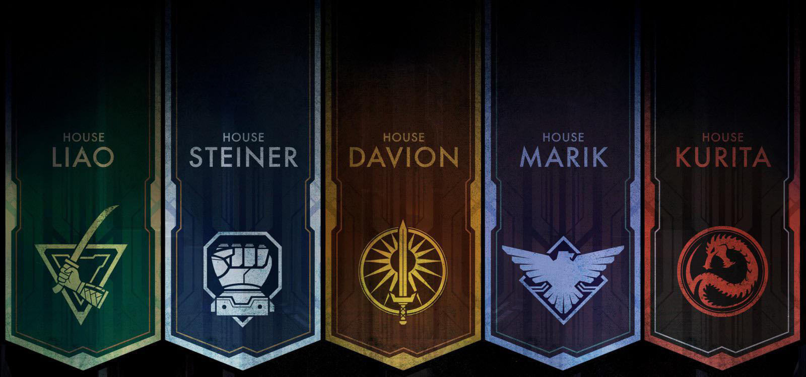
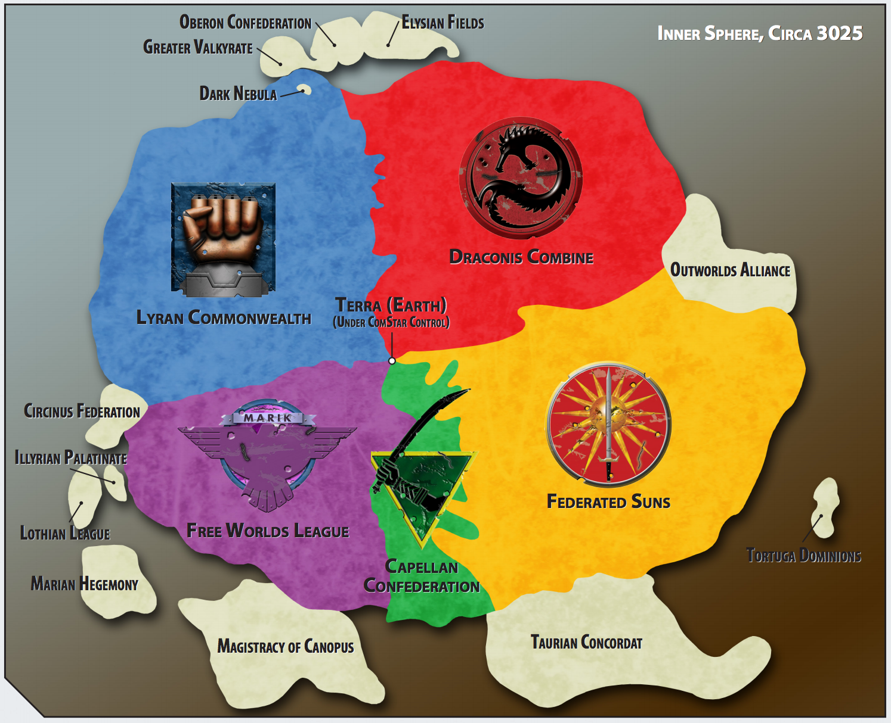

"The battlefields of the future are dominated by huge robotic war machines known as BattleMechs. Piloting these awesome weapons of war are men and women, the elite of the elite, knowing that each battle could be their last. They are MechWarriors."
Battletech's story predominantly takes place in the Inner Sphere, a region of space of roughly 450-550 lightyears radius centered on Earth, or Terra as it's now known. The region is divided amongst 5 interstellar superpowers, each ruled by Noble Houses, and constantly vying for power and skirmishing along their borders.
Going clockwise, the Draconis Combine is an autharitarian state styled off of Shogunate Japan, valuing honour above all. The Federated Suns position themselves as the champions of liberty and personal freedom, though look down on others because of this. The Capellan Confederation is an even more totalitarian regime, known for their deceptive and duplicitous ways. The Free Worlds League is a rough federation of technically independent constituents, often busy fighting amongst themselves. The Lyran Commonwealth is traditionally a market alliance, leveraging a massive economic base to throw money at all of their problems. Other states and great houses exist and maintain their own territory, though are far and wide overshadowed by these so called Successor States, barely more than a footnote in the historical record.